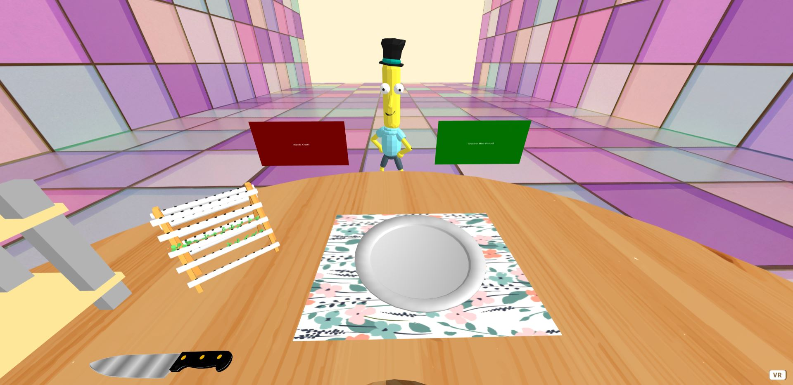

R2D2
Space Man
Mr. P
Space Woman


The background colored by black for space mood but it's only temporal decision.
There are four different customers with random orders.
Each customer can either be kicked out or be served.
If the user clikc the customer, the customer will let the user know what to make.
Decided to delete HUD for now for better graphic.
Link to demo: Link To Demo Play
R2D2 |
Space Man |
Mr. P |
Space Woman |
|---|---|---|---|
|
 | |
Finding working 3d objects was challenging.
Couldn't figure out how to manage the font size of text holder.
Isntead of removing each object, the custmoer will be placed at below the
ground and every time I need one of them, using setY(), I lifted up.
There's a invisible plane which is hitbox of customer, which allows the user to figure out what they want.
The speech bubble, or dialogue box is not made yet but it will be displayed and help the user know what to cook.